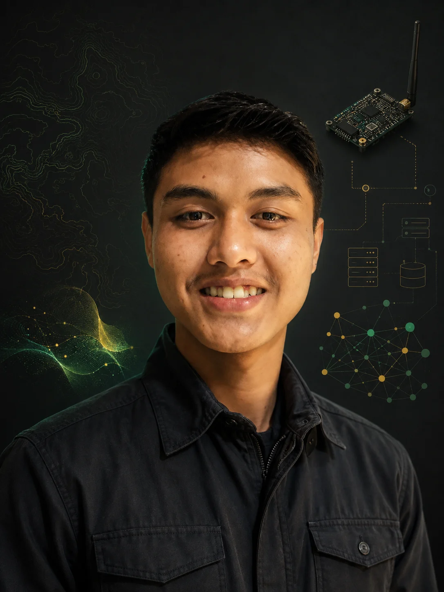

01⌁
Connected devices
Sensors, microcontrollers, and machines that observe and respond to the real world.
Transmission 001
I’m Dudin, an electronics, IoT, backend, and AI developer. I connect physical devices, intelligent software, and useful ideas.

Physical input becomes a reliable digital experience.
Four disciplines, connected by one practical way of thinking.
Sensors, microcontrollers, and machines that observe and respond to the real world.
Clear APIs and dependable services that move, protect, and organize information.
Intelligent workflows that turn data into assistance, prediction, and automation.
A small space for visual experiments, graphic ideas, and playful digital craft.
Selected collaborations and digital work already out in the world.
Digital product and web presence
Campaign experience and visual implementation
Online platform and user experience
Tell me about the device, system, intelligent workflow, or creative experiment you want to bring to life.
Send a message ↗